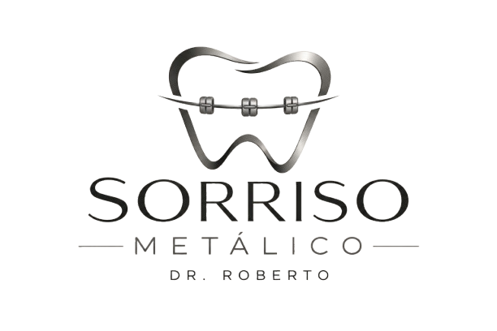

Aqui no consultório do Doutor Roberto nos tornamos o seu sorriso, em o seu tesouro
Este é um site que visa o gerenciamento da clínica odontológica do Dr. Roberto.

Sorriso Metálico
Este é um site que visa o gerenciamento da clínica odontológica do Dr. Roberto.
